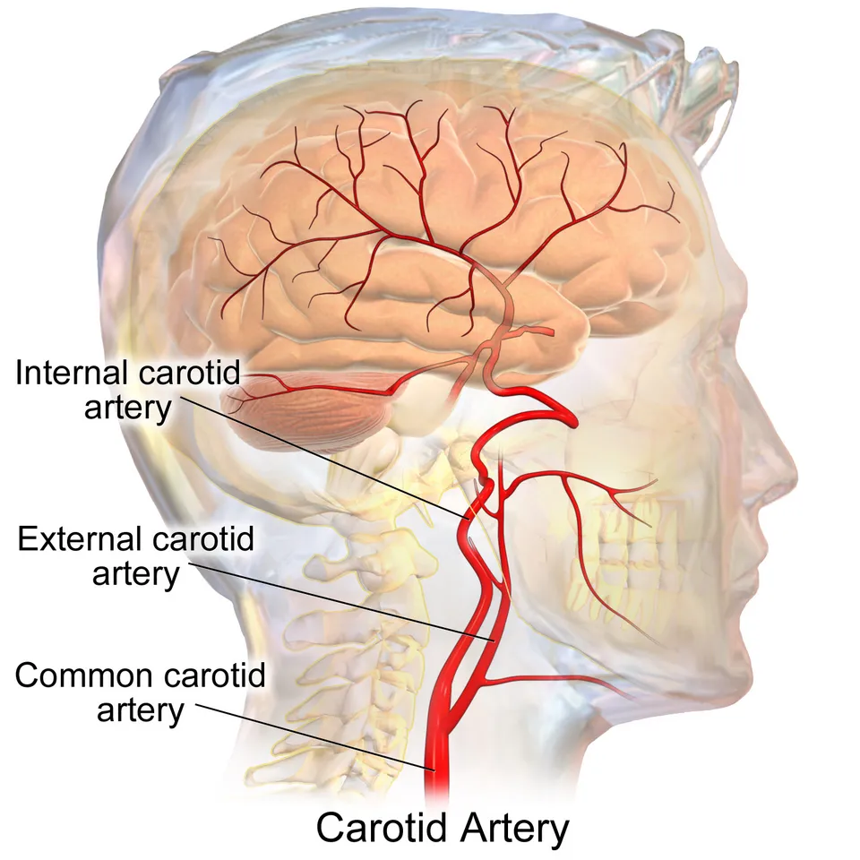

DX.7 — Dissection artérielle cervicale 🚩 E4
Une douleur cervicale latérale inhabituelle avec hémicrânie et Horner partiel, ou une douleur de nuque avec céphalée occipitale, doit faire évoquer une dissection artérielle cervicaleS2. Le médecin adresse le patient le jour même en filière neurovasculaire, car la plupart des infarctus surviennent dans la semaine qui suit ces signesS2.
Ce cours DX.7 reprend les sources citées ; aucun médecin ne l’a encore validé cliniquement.
1. Définition
La dissection artérielle cervicale est le clivage de la paroi d’une artère carotide interne ou vertébrale par un hématome intramuralS2. Cet hématome peut communiquer ou non avec la lumière de l’artère par une déchirure intimale de la paroiS2.
2. Épidémiologie (Suisse, puis Europe)
En Suisse, les neurologues des HUG (Hôpitaux universitaires de Genève) et du CHUV (Centre hospitalier universitaire vaudois) chiffrent l’incidence annuelle à 2,5 à 3 pour 100 000 pour les carotidesS2. Elle atteint 1 à 1,5 pour 100 000 pour les artères vertébrales, ce qui fait de la dissection une cause rare dans la population généraleS2.
La dissection cause pourtant environ 15 à 20 % des accidents vasculaires cérébraux de l’adulte jeune et d’âge moyen, et elle occupe le deuxième rang avant 45 ansS2. Les chiffres lus précisent le pic d’âge, la répartition entre carotide et vertèbre et la variation saisonnièreS2S8.
Chiffres lus : fréquence, terrain, localisation
| Indicateur | Valeur | Population | Source |
|---|---|---|---|
| Incidence annuelle, carotide interne | 2,5 à 3 pour 100 000 | Revue suisse, 2017 | S2 |
| Incidence annuelle, artère vertébrale | 1 à 1,5 pour 100 000 | Revue suisse, 2017 | S2 |
| Part de tous les AVC (accidents vasculaires cérébraux) ischémiques | Environ 2 % | Revue suisse, 2017 | S2 |
| Part des AVC de l’adulte jeune et d’âge moyen | 15 à 20 % | Revue suisse, 2017 | S2 |
| Rang parmi les causes d’AVC avant 45 ans | Deuxième | Revue suisse, 2017 | S2 |
| Pic d’incidence | Cinquième décennie | Revue suisse, 2017 | S2 |
| Âge moyen | 44 ans ; hommes 55 % | Série française présentée au CHUV | S8 |
| Sexe | Aucune prédominance ; les femmes ont environ 5 ans de moins | Revue suisse, 2017 | S2 |
| Carotide contre vertébrale | Carotide atteinte environ 4 fois plus souvent | Revue suisse, 2017 | S2 |
| Dissections multiples | 15 à 25 % des cas, surtout chez la femme | Revue suisse, 2017 | S2 |
| Saison | Plus fréquente en automne et en hiver | Revue suisse, 2017 | S2 |
| Traumatisme crânien sévère, angioscanner systématique | 6,5 % de dissections, mortalité de 25 % | 230 blessés graves consécutifs, cités par la Suva | S4 |
Ces chiffres de population proviennent de séries citées par la revue suisse, et non d’un registre nationalS2.
3. Physiopathologie
L’hématome naît d’une déchirure intimale, ou peut-être d’un saignement primitif des vasa vasorum, puis il clive la paroi sous l’intima ou sous l’adventiceS2. Il provoque surtout des embolies issues du thrombus, plus rarement une baisse du débit cérébral, selon un mécanisme thromboembolique dans 85 % des infarctusS2S8.
L’élargissement de l’artère comprime les fibres sympathiques péricarotidiennes, d’où le syndrome de Claude-Bernard-Horner, et parfois les derniers nerfs crâniensS2. Les segments extracrâniens mobiles, au contact des processus transverses de C1-C2 (première et deuxième vertèbres cervicales) ou de l’apophyse styloïde, sont les plus vulnérablesS2.
La fenêtre des facteurs sépare terrain, déclencheurs et facteurs de risque, et les planches annotées situent carotide et artère vertébraleS2S9S10.
Une origine multifactorielle : terrain, déclencheurs, facteurs de risque
| Groupe | Éléments lus | Ce que le médecin en tire | Source |
|---|---|---|---|
| Maladies de la paroi | Dysplasie fibromusculaire ; Ehlers-Danlos de type IV ; Marfan ; ostéogenèse imparfaite ; polykystose rénale ; neurofibromatose | Rechercher une artériopathie sous-jacente | S2 |
| Anomalies associées | Racine aortique élargie, tortuosités artérielles, prolapsus mitral, anévrismes intracrâniens | Échocardiographie, imagerie vasculaire élargie | S2 |
| Déclencheurs mineurs | Toux, éternuements, vomissements, port de charge, sport sans traumatisme violent, intubation, accouchement | Le déclencheur paraît souvent banal | S2S8 |
| Manipulation cervicale | Citée parmi les facteurs environnementaux ; association faible dans des études de qualité médiocre | Rechercher un Horner avant toute manipulation d’un torticolis | S2S5S8 |
| Infection préalable | Plus fréquente dans la dissection carotidienne | Questionner sur une infection récente | S2 |
| Facteurs de risque | Hypertension, migraine, contraception orale, grossesse, post-partum | Dépister et traiter l’hypertension | S2 |
| Traumatisme sévère | Dissection vertébrale toujours associée à une fracture cervicale dans la série citée | Angioscanner chez le polytraumatisé | S4 |
Des biopsies cutanées montrent des anomalies du tissu conjonctif chez plus de la moitié des patients, ce qui soutient la piste d’une fragilité constitutionnelleS2.
Carotide et artère vertébrale : où naît la dissection
Artères carotides, vue latérale. Blausen Medical publie ce dessin en couleurs des carotides sous licence CC BY 3.0 ; la carotide interne monte vers la base du crâneS9.

Le lecteur regarde d’abord seul l’image (artères carotides, vue latérale), puis il cherche lui-même les structures.
La copie annotée (artères carotides, vue latérale) porte les repères numérotés que la lecture guidée explique.
- 1. La bifurcation de la carotide commune porte le bulbe ; la dissection débute en général environ 2 cm en avalS2.
- 2. Le segment cervical de la carotide interne, mobile, est le siège habituel de l’hématome de paroiS2.
- 3. La portion qui pénètre la base du crâne marque la limite : la dissection s’arrête en général dans la région sous-pétreuseS2.
- 4. Les vertèbres cervicales abritent l’artère vertébrale, invisible ici, dans les foramens transversairesS2.
- La douleur suit le trajet de l’artère, au cou latéral et à l’hémiface, et non sur la ligne médiane cervicaleS2.
Ce que l’image décide. L’image montre le trajet ; seule l’imagerie par résonance magnétique avec saturation de graisse montre l’hématome qui confirme la dissectionS2.

Vertèbres cervicales et atlas. OpenStax publie cette planche en couleurs sous licence CC BY 3.0 ; elle montre les foramens transversaires que traverse l’artère vertébraleS10.

Le lecteur regarde d’abord seul l’image (vertèbres cervicales et atlas), puis il cherche lui-même les structures.
La copie annotée (vertèbres cervicales et atlas) porte les repères numérotés que la lecture guidée explique.
- 1. Le foramen transversaire d’une vertèbre typique conduit l’artère vertébrale dans son segment V2 (deuxième segment vertébral), siège de moins de 10 % des dissectionsS2.
- 2. Le foramen transversaire de l’atlas marque la jonction atlanto-axoïdienne, où siègent environ 65 % des dissections vertébralesS2.
- 3. La colonne C1-C2, très mobile en rotation, explique la vulnérabilité du segment V3 (troisième segment vertébral)S2S5.
Ce que l’image décide. L’image relie la mobilité de la jonction C1-C2 au siège préférentiel de la dissection vertébrale ; elle ne remplace pas l’imagerie vasculaireS2.

4. Démarche diagnostique
La démarche commence par l’hypothèse : toute cervicalgie ou hémicrânie inhabituelle et persistante doit faire évoquer une dissection, surtout chez l’adulte jeuneS2. Le médecin cherche ensuite les signes locaux et les signes ischémiques, puis il demande sans délai l’imagerie de la paroi artérielleS2.
La séquence diagnostique fixe chaque étape avec son délai, tandis que le tableau différentiel distingue la dissection des autres causes de douleur cervicale brutaleS2S8.
Le risque d’erreur diagnostique est réel, car environ 80 % des manifestations ischémiques sont précédées de signes d’alerte que l’on peut reconnaîtreS8.
Séquence diagnostique en six étapes
| Étape | Question | Outil | Seuil ou résultat | Conduite | Source |
|---|---|---|---|---|---|
| 1. Évoquer | La douleur est-elle inhabituelle, unilatérale, persistante ? | Anamnèse | Cervicalgie latérale ou postérieure avec céphalée | Ne pas conclure à une cervicalgie commune | S2 |
| 2. Signes locaux | Existe-t-il un Horner, un acouphène pulsatile, une paralysie de nerf crânien ? | Pupilles, paupières, nerfs crâniens | Deux éléments de la triade suffisent à évoquer fortement la carotide | Imagerie le jour même | S2S8 |
| 3. Ischémie | Existe-t-il un déficit focal, une amaurose, un syndrome de Wallenberg ? | Examen neurologique, NIHSS (National Institutes of Health Stroke Scale) | Déficit apparu depuis moins de 4,5 heures | Filière AVC : thrombolyse discutée | S2S7 |
| 4. Paroi | L’hématome est-il visible ? | Imagerie par résonance magnétique, séquence T1 (pondérée en T1) avec saturation de graisse | Croissant d’hématome mural | Diagnostic confirmé | S2 |
| 5. Lumière | Sténose, occlusion ou anévrisme ? | Angiographie par résonance magnétique, angioscanner, échodoppler | Sténose longue et irrégulière dans 48 % des cas | Choix antithrombotique | S2 |
| 6. Terrain | Existe-t-il une artériopathie ? | Imagerie des artères rénales, homocystéine, échocardiographie, tension | Dysplasie fibromusculaire, hypertension | Suivi spécialisé | S2 |
La filière neurovasculaire décide du traitement ; le médecin de premier recours n’attend donc pas l’imagerie pour adresser le patient le jour mêmeS2S7.
Diagnostics différentiels : douleur cervicale avec céphalée
| Diagnostic | Ce qui le rapproche | Ce qui le distingue | Examen qui tranche | Source |
|---|---|---|---|---|
| Méningite (DX.5) | Céphalée, raideur | Fièvre, syndrome infectieux | Ponction lombaire | S5 |
| Hémorragie sous-arachnoïdienne (DX.6) | Céphalée brutale, raideur de nuque | Céphalée maximale d’emblée ; la dissection intracrânienne peut aussi saigner | Scanner cérébral, angioscanner | S2 |
| Radiculopathie cervicale (DX.2) | Douleur dans le territoire C5-C6 (cinquième et sixième racines cervicales) | Rare dans la dissection vertébrale, avec céphalée occipitale associée | Imagerie vasculaire si céphalée | S2 |
| Cervicalgie commune (DX.1) | Douleur du cou après un effort | Absence de Horner, de céphalée et de signe neurologique | Examen clinique ; imagerie au moindre doute | S5S2 |
| Migraine | Hémicrânie pulsatile | Un quart des migraineux jugent la douleur de dissection semblable à leur migraine | Imagerie si la céphalée est inhabituelle | S2 |
| Carotidynie, douleur dentaire ou ORL (oto-rhino-laryngologique) | Douleur faciale ou cervicale latérale | Absence de Horner et d’image pariétale | Échodoppler, imagerie par résonance magnétique | S8 |
| Torticolis | Raideur douloureuse | Un Horner associé change tout | Examen des pupilles avant toute manipulation | S8 |
5. Anamnèse ciblée et drapeaux rouges
L’anamnèse cherche le déclencheur, la chronologie et les symptômes de pont, car les signes ischémiques suivent les signes locaux de quelques minutes à quelques semainesS2S4. Le délai médian avant l’ischémie atteint environ 5 jours, et trois quarts des patients avec signes locaux présentent un infarctus, en moyenne après 5 à 10 joursS8.
Les questions ciblées traduisent chaque réponse en conduite, tandis que les repères chronologiques servent aussi à l’évaluation assécurologiqueS2S4.
Questions ciblées et drapeaux rouges
| Question | Réponse qui alarme | Signification | Conduite | Source |
|---|---|---|---|---|
| La douleur est-elle d’un côté, au cou, à la tempe ou derrière l’œil ? | Oui, unilatérale et inhabituelle | Dissection carotidienne | Examen des pupilles, imagerie | S2 |
| La douleur siège-t-elle à la nuque avec céphalée occipitale ? | Oui | Dissection vertébrale | Imagerie le jour même | S2 |
| Entendez-vous un bruit pulsatile dans l’oreille ? | Oui | Acouphène pulsatile homolatéral | Imagerie vasculaire | S2S4 |
| Avez-vous vu flou ou perdu la vue d’un œil, même brièvement ? | Oui | Ischémie rétinienne, amaurose | Urgence neurovasculaire | S2 |
| Avez-vous eu une faiblesse, des troubles de la parole, un vertige ? | Oui | AIT (accident ischémique transitoire) ou AVC | Appel de la filière AVC | S2 |
| Avez-vous reçu une manipulation cervicale, toussé fort ou fait un effort ? | Oui | Déclencheur mécanique possible | Dater l’événement | S2S4 |
| Un membre de la famille a-t-il eu une dissection ? | Oui | Risque accru de récidive | Bilan d’artériopathie | S2 |
| Avez-vous eu une infection récente ou accouché récemment ? | Oui | Facteur favorisant | Noter le terrain | S2 |
Repères chronologiques
| Intervalle | Ce qui survient | Interprétation | Source |
|---|---|---|---|
| Minutes à quelques jours après le déclencheur | Cervicalgie, céphalée, signes locaux | Symptômes de pont | S8S4 |
| Quelques minutes à quelques semaines, moins de 4 semaines en général | Manifestations ischémiques | Fenêtre de prévention | S2 |
| Dans la semaine suivant les signes locaux | La plupart des accidents ischémiques | Période de risque maximal | S2 |
| Jusqu’à 1 mois | Accidents ischémiques plus tardifs | Le traitement préventif reste utile | S2 |
| 4 semaines | Limite supérieure habituelle retenue pour le lien avec un accident | Évaluation assécurologique | S4 |
| Plusieurs semaines à quelques mois | Persistance de la douleur vasculaire unilatérale | Évolution attendue | S4 |
La fenêtre de documentation liste ce que le médecin note dès la première consultation, car ces éléments datent la lésion et servent plus tard à l’expertiseS4.
Ce qu’il faut documenter dès la première consultation
| Élément | Pourquoi | Source |
|---|---|---|
| Heure et nature de l’événement déclencheur | Plus la latence avec les symptômes de pont est courte, plus un lien accidentel devient probable | S4 |
| Douleur inédite, lancinante, unilatérale de la nuque | Symptôme de pont typique | S4 |
| Pupille contractée, paupière tombante | Horner aigu, marqueur temporel d’une lésion vasculaire | S4 |
| Bourdonnement homolatéral synchrone du pouls | Signe local de déchirure récente | S4 |
| Premier examen neurologique complet | Référence pour juger une aggravation | S4 |
| Imagerie initiale et date | L’hématome n’est visible qu’après 48 à 72 heures | S4 |
Ces données servent d’abord le patient ; elles soutiennent ensuite l’évaluation selon la loi sur l’assurance-accidents lorsque la question d’un lien accidentel se poseS4.
6. Examen physique ciblé, région par région
L’examen compare les deux côtés, car le syndrome de Claude-Bernard-Horner partiel et la paralysie d’un nerf crânien sont des signes locaux décisifsS2. Chaque région a sa fenêtre : yeux et pupilles, nerfs crâniens, cou et vaisseaux, examen neurologique central et état général et terrainS2.
Yeux et pupilles
| Élément | Technique | Anomalie | Interprétation | Source |
|---|---|---|---|---|
| Pupilles | Comparaison à la lumière et dans la pénombre | Myosis homolatéral | Horner partiel de dissection carotidienne | S2S4 |
| Paupières | Observation de face | Ptosis discret | Horner partiel | S2S4 |
| Vision | Acuité, champ visuel | Amaurose, perte de champ | Ischémie rétinienne ou hémisphérique | S2 |
| Fond d’œil | Ophtalmoscopie | Embole rétinien | Mécanisme embolique | S2 |
Un Horner manque souvent lorsque la dissection a déjà occlus l’artère, car il signe surtout un hématome excentrique ; son absence n’exclut donc rienS4.
Nerfs crâniens
| Nerf | Technique | Anomalie | Interprétation | Source |
|---|---|---|---|---|
| XII, hypoglosse | Protrusion de la langue | Déviation vers le côté atteint | Compression par la carotide disséquée, la plus fréquente | S2S8 |
| IX et X | Voile du palais, déglutition, voix | Dysphagie, dysphonie | Atteinte des derniers nerfs crâniens | S2 |
| III, V, VII | Oculomotricité, sensibilité de la face, mimique | Paralysie | Mécanisme ischémique du nerf | S2 |
Une paralysie de nerf crânien complique environ 12 % des dissections carotidiennes, surtout les nerfs X, IX et XIIS2.
Cou et vaisseaux
| Élément | Technique | Anomalie | Interprétation | Source |
|---|---|---|---|---|
| Douleur | Localisation précise | Cou latéral pour la carotide ; nuque pour la vertèbre | Topographie de l’artère | S2 |
| Auscultation | Stéthoscope sur le trajet carotidien | Souffle | Sténose possible | S5S8 |
| Mobilité | Mouvements prudents, sans manipulation | Douleur, raideur | Ne pas mobiliser activement si une dissection est suspectée | S8 |
| Tension artérielle | Mesure aux deux bras | Hypertension | Facteur de risque de récidive | S2 |
Examen neurologique central
| Territoire | Signes | Interprétation | Source |
|---|---|---|---|
| Carotidien | Hémiparésie, aphasie, troubles hémisphériques, amaurose | Symptômes dans 50 à 95 % des dissections carotidiennes | S2 |
| Vertébrobasilaire | Syndrome de Wallenberg, ataxie, troubles thalamiques ou cérébelleux | Symptômes dans plus de 90 % des dissections vertébrales | S2 |
| Médullaire | Déficit des membres | Atteinte médullaire décrite | S2 |
| Méningé | Raideur de nuque, céphalée brutale | Extension intracrânienne avec hémorragie | S2 |
État général et terrain
| Élément | Recherche | Anomalie | Orientation | Source |
|---|---|---|---|---|
| Peau et articulations | Hyperlaxité, peau fine | Signes de maladie du tissu conjonctif | Ehlers-Danlos, Marfan | S2 |
| Cœur | Auscultation | Souffle de prolapsus mitral | Échocardiographie | S2 |
| Grossesse et post-partum | Anamnèse | Grossesse en cours ou récente | Facteur de risque ; prudence thérapeutique | S2 |
| Température | Mesure | Fièvre | Infection préalable ou autre diagnostic | S2S5 |
7. Approche syndromique
La dissection appartient au syndrome vasculaire de la Phase A, qui associe douleur cervicale, signes locaux et, souvent, ischémie cérébrale ou rétinienneS2. Le tableau des formes cliniques oppose dissection carotidienne, dissection vertébrale et dissection intracrânienne, dont le pronostic diffère nettementS2.
Formes cliniques : carotide, vertèbre, intracrânien
| Forme | Terrain | Douleur | Signes associés | Particularité | Source |
|---|---|---|---|---|---|
| Carotide interne | Homme plus âgé ; infection préalable | Cou latéral, hémicrânie, hémiface, rétro-orbitaire | Horner partiel, nerfs crâniens, amaurose | Triade dans environ un tiers des cas ; AIT plus fréquents | S2 |
| Artère vertébrale | Sujet jeune, surtout la femme ; traumatisme mineur | Nuque, céphalée occipitale ou hémicrânie | Wallenberg, ataxie, vertige | Siège à la jonction C1-C2 dans environ 65 % des cas | S2 |
| Intracrânienne | Rare, 0,04 % | Céphalée | Hémorragie sous-arachnoïdienne possible | Diagnostic plus difficile, pronostic plus mauvais | S2 |
| Traumatique sévère | Polytraumatisé | Masquée par les lésions | Fracture cervicale fréquente | Angioscanner systématique chez le blessé grave | S4 |
8. Diagnostic positif et critères
Le diagnostic positif repose sur l’imagerie de la paroi : l’hématome intramural, visible en séquence T1 avec saturation de graisse, confirme la dissectionS2. Les critères distinguent ce qui confirme de ce qui ne fait qu’évoquer, comme une sténose isolée ou une triade incomplèteS2S4.
Critères cliniques et d’imagerie
| Niveau | Critère | Ce qui ne suffit pas | Source |
|---|---|---|---|
| Clinique | Au moins deux éléments de la triade : douleur cervicale latérale, céphalée ou hémicrânie, Horner partiel | Une douleur cervicale isolée | S2 |
| Paroi | Hématome intramural en T1 avec saturation de graisse | Une imagerie trop précoce : l’hématome n’apparaît parfois qu’après 48 à 72 heures | S2S4 |
| Lumière | Sténose longue et irrégulière, occlusion ou anévrisme disséquant | Une sténose courte, qui évoque aussi l’athérome | S2 |
| Calibre externe | Élargissement de l’artère à l’échodoppler | Un échodoppler normal : faux négatifs possibles | S2 |
| Contexte | Signe local ou ischémie concordants avec l’artère atteinte | Une image sans lien topographique | S2 |
9. Examens complémentaires
L’imagerie par résonance magnétique est l’examen de choix, car ses séquences T1 avec saturation de graisse montrent l’hématome et ses séquences angiographiques la lumièreS2. L’échodoppler reste l’examen de premier accès, mais il ne voit pas les sténoses hautes peu serrées ni les anévrismes, d’où ses faux négatifsS2.
Le tableau des examens donne indication, résultat chiffré et conduite, et la fenêtre du bilan étiologique énumère ce que recommandent les neurologues suissesS2.
Examens ciblés : indication, résultat, interprétation, conduite
| Examen | Indication | Résultat | Interprétation chiffrée | Conduite | Source |
|---|---|---|---|---|---|
| Imagerie par résonance magnétique avec saturation de graisse | Toute suspicion | Hématome de paroi en croissant | Examen de choix | Confirme ; montre aussi l’infarctus | S2 |
| Angiographie par résonance magnétique | Avec la séquence précédente | Sténose, occlusion, anévrisme | Sténose 48 %, occlusion 35 %, anévrisme 17 % | Oriente le choix antithrombotique | S2 |
| Angioscanner | Accès rapide, contre-indication, polytraumatisme | Sténose, hématome parfois visible | Fiabilité inférieure pour la paroi | Compléter par résonance magnétique si doute | S2S4 |
| Échodoppler cervical | Premier accès, suivi | Sténose, hématome hypoéchogène, calibre élargi | Faux négatifs : anévrisme, sténose haute peu serrée | Excellent outil de suivi | S2 |
| Doppler transcrânien | Suspicion d’emboles | Micro-embolisations | Argument pour l’anticoagulation selon certains centres | Discussion neurovasculaire | S2 |
| Imagerie cérébrale | Déficit neurologique | Infarctus, caractère hémorragique | Topographie embolique ou hémodynamique | Thrombolyse ou thrombectomie discutée | S2S7 |
| Scanner cérébral et ponction lombaire | Céphalée brutale, signes méningés | Hémorragie sous-arachnoïdienne | Extension intracrânienne | Neurochirurgie ou neuroradiologie | S2S7 |
Bilan étiologique recommandé
| Examen | Ce qu’il recherche | Résultat qui change la conduite | Source |
|---|---|---|---|
| Imagerie des artères rénales par résonance magnétique | Artériopathie, dysplasie fibromusculaire | Dysplasie : risque de récidive | S2 |
| Homocystéine | Hyperhomocystéinémie | Si élevée : génotype 677TT de la MTHFR (méthylène-tétrahydrofolate réductase) | S2 |
| Échocardiographie | Anomalie cardiaque associée | Racine aortique élargie, prolapsus mitral | S2 |
| Tension et facteurs de risque | Hypertension | Hypertension : risque accru de récidive ischémique | S2 |
La grille de lecture du compte rendu traduit chaque description radiologique en conduite pratiqueS2.
Compte rendu d’imagerie : ce qui change la conduite
| Description | Signification | Conduite | Source |
|---|---|---|---|
| Hématome de paroi en hypersignal T1 avec saturation de graisse | Dissection confirmée | Antithrombotique en filière neurovasculaire | S2 |
| Sténose longue et irrégulière | Forme la plus fréquente | Antiplaquettaire ou anticoagulant selon le contexte | S2 |
| Occlusion | Forme sévère, recanalisation moins fréquente | Anticoagulant discuté ; suivi rapproché | S2S8 |
| Anévrisme disséquant | Extension sous-adventitielle, environ un tiers des cas | Suivi ; geste discuté seulement si évolution | S2S7 |
| Thrombus intraluminal | Source d’embolies | Anticoagulant discuté | S2 |
| Lésions ischémiques multiples dans un territoire | Mécanisme embolique | Anticoagulant discuté | S2 |
| Extension intracrânienne | Risque d’hémorragie sous-arachnoïdienne | Antiplaquettaire ; avis neurochirurgical | S2 |
| Dissections multiples | Fragilité artérielle diffuse | Bilan d’artériopathie ; risque de récidive | S2 |
10. Arbre décisionnel
L’arbre dépend d’abord du délai depuis le début des symptômes, car la fenêtre de 4,5 heures fixée par l’AIPS (information professionnelle suisse) de l’altéplase conditionne la thrombolyseS7AIPS 48313. Il oriente ensuite vers l’imagerie de la paroi, puis vers le choix antithrombotique en filière neurovasculaire, selon la version détailléeS2S7.
Arbre décisionnel détaillé
| Situation | Décision | Délai | Source |
|---|---|---|---|
| Déficit focal de moins de 4,5 heures | Filière AVC ; thrombolyse intraveineuse si critères standards | Immédiat | S7AIPS 48313 |
| Occlusion d’un gros vaisseau antérieur | Thrombectomie mécanique | Immédiat | S7 |
| Hémorragie sous-arachnoïdienne sur dissection intracrânienne | Traitement endovasculaire ou chirurgical précoce | Immédiat | S7 |
| Douleur cervicale avec Horner ou nerf crânien, sans déficit | Imagerie de la paroi et avis neurovasculaire | Le jour même | S2 |
| Dissection extracrânienne confirmée | Antiagrégant ou anticoagulant, choix neurovasculaire | Dès la confirmation | S7S2 |
| Aggravation malgré un traitement optimal | Traitement endovasculaire, stent | Rapide | S2S8 |
| Phase post-aiguë, sténose résiduelle ou anévrisme | Suivi ; données insuffisantes pour un geste systématique | Programmé | S7 |
11. Prise en charge selon les recommandations suisses
11.A — But. La prise en charge prévient l’accident ischémique initial ou sa récidive pendant la semaine où le risque culmineS2. En phase aiguë d’infarctus, elle vise aussi la reperfusion, par thrombolyse ou thrombectomie selon les critères standardsS7.
11.B — Moyens. Le traitement antithrombotique repose sur un antiplaquettaire ou un anticoagulant, aucune supériorité n’ayant été démontrée dans les essais disponiblesS2S7. Le tableau thérapeutique précise molécule, dose AIPS (information professionnelle suisse), durée, contrôle et échec ; les fiches recopient l’AIPS : acide acétylsalicylique, phenprocoumone, altéplaseAIPS 51795AIPS 19395AIPS 48313.
L’essai suisse TREAT-CAD ne montre pas la non-infériorité de l’aspirine face aux antivitamines K, avec 8 % d’AVC ischémiques sous aspirine contre aucun sous antivitamine KS3. La fenêtre du choix résume les arguments cliniques pour l’une ou l’autre option, et la fenêtre de l’essai chiffre ses résultatsS2S8S3.
Traitement structuré
| Molécule ou geste | Situation | Dose selon l’AIPS | Durée | Contrôle | Critère d’échec | Source |
|---|---|---|---|---|---|---|
| Altéplase, Actilyse® | Infarctus aigu dans les 4,5 heures, hémorragie exclue | 0,9 mg/kg, au maximum 90 mg ; 10 % en bolus, le reste en perfusion sur 60 minutesAIPS 48313 | Dose unique | Tension, neurologie, hémorragie | Aggravation : imagerie urgente | S7AIPS 48313 |
| Thrombectomie mécanique | Occlusion d’un gros vaisseau de la circulation antérieure | Geste, sans dose | Phase aiguë | Recanalisation | Échec : soins intensifs neurologiques | S7 |
| Acide acétylsalicylique, Aspirine® Cardio | Dissection extracrânienne, surtout signes locaux seuls, gros infarctus ou extension intracrânienne | Après AIT : 100 mg 3 fois par jour ou 300 mg 1 fois par jour ; TREAT-CAD a utilisé 300 mg 1 fois par jourAIPS 51795 | 90 jours dans TREAT-CAD, puis selon l’imagerie | Saignement digestif, neurologie | Nouvel événement ischémique | S3S2AIPS 51795 |
| Phenprocoumone, Marcoumar® | Sténose serrée, occlusion, thrombus flottant, ischémies multiples | Jour 1 : 4,5 à 9 mg ; jour 2 : 6 mg ; puis selon l’INR (rapport normalisé international)AIPS 19395 | 2 à 4 semaines puis antiplaquettaire selon la présentation française ; 90 jours dans TREAT-CAD | INR cible 2,0 à 3,0, dès le troisième ou le quatrième jour | Hémorragie, INR instable | S8S3AIPS 19395 |
| Stent endovasculaire | Aggravation clinique malgré un traitement médical optimal | Geste, sans dose | Selon l’équipe | Imagerie | Récidive ischémique | S2S8 |
La durée du traitement dépend de l’imagerie de suivi et varie donc d’un patient à l’autreS2.
Antiplaquettaire ou anticoagulant : arguments cliniques
| Situation | Option favorisée | Raison | Source |
|---|---|---|---|
| Signes locaux seuls | Antiplaquettaire | Risque ischémique moindre | S2S8 |
| Infarctus étendu, NIHSS de 15 ou plus | Antiplaquettaire | L’anticoagulation est contre-indiquée par le risque hémorragique | S2S8 |
| Extension intracrânienne | Antiplaquettaire | Risque d’hémorragie sous-arachnoïdienne | S2S8 |
| Sténose sévère ou occlusion | Anticoagulant | Selon certains centres | S2S8 |
| Thrombus intraluminal ou flottant | Anticoagulant | Embolies probables | S2S8 |
| Plusieurs ischémies dans le même territoire | Anticoagulant | Mécanisme embolique actif | S2S8 |
| Micro-embolisations au Doppler transcrânien | Anticoagulant | Mécanisme embolique actif | S2 |
L’ESO (European Stroke Organisation) recommande fortement que le clinicien puisse prescrire l’une ou l’autre option, car deux essais de phase 2 n’ont montré aucune différenceS7.
Essai suisse TREAT-CAD : résultats chiffrés
| Élément | Résultat | Source |
|---|---|---|
| Centres | 10 centres en Suisse, en Allemagne et au Danemark | S3 |
| Patients | Plus de 18 ans, dissection symptomatique vérifiée par résonance magnétique depuis moins de 2 semaines | S3 |
| Bras | Aspirine 300 mg 1 fois par jour contre antivitamine K, INR cible 2,0 à 3,0, pendant 90 joursAIPS 51795 | S3 |
| Critère principal | AVC, hémorragie majeure, décès ou nouvelle lésion à l’imagerie | S3 |
| Résultat | 23 % sous aspirine contre 15 % sous antivitamine K ; différence absolue de 8 % | S3 |
| AVC ischémiques | 7 patients (8 %) sous aspirine, aucun sous antivitamine K | S3 |
| Hémorragie extracrânienne majeure | 1 patient (1 %) sous antivitamine K, aucun sous aspirine | S3 |
| Décès | Aucun | S3 |
| Conclusion des auteurs | La non-infériorité de l’aspirine n’est pas démontrée | S3 |
Acide acétylsalicylique — Aspirine® Cardio, n° Swissmedic 51795, information de mars 2026
| Indication | Prophylaxie des accidents cérébro-vasculaires après des accidents ischémiques transitoires ; la dissection n’y figure pas en propreAIPS 51795. |
|---|---|
| Dose | Prévention après accident ischémique transitoire : 100 mg 3 fois par jour ou 300 mg 1 fois par jourAIPS 51795. |
| Contre-indications | « Hypersensibilité aux salicylates et/ou à d'autres anti-inflammatoires (antirhumatismaux) ou à l'un des excipients selon la composition » ; « Diathèse hémorragique » ; « Ulcères gastriques et/ou duodénaux actifs ou hémorragies gastro-intestinales » ; « Troubles sévères de la fonction hépatique (cirrhose et ascite) » ; « Insuffisance rénale sévère (clairance de la créatinine <30 ml/min) » ; « Insuffisance cardiaque sévère (NYHA III-IV) » ; « Troisième trimestre de la grossesse »AIPS 51795. |
| Grossesse | « Pendant le premier et le deuxième trimestre de la grossesse, l'acide acétylsalicylique ne doit être administré qu'en cas de nécessité absolue » ; « L'acide acétylsalicylique est contre-indiqué au cours du troisième trimestre de la grossesse »AIPS 51795. |
| Allaitement | « Au cours de l'allaitement, prescrire Aspirine Cardio seulement en cas d'indication impérative, le sevrage est nécessaire lors de l'emploi régulier de hautes doses (>300 mg/jour) »AIPS 51795. |
| Mise à jour | Information professionnelle de mars 2026AIPS 51795. |
Phenprocoumone — Marcoumar®, n° Swissmedic 19395, information d’octobre 2020
| Indication | Prévention des thromboses, thromboses, embolies ; la dissection n’y figure pas en propreAIPS 19395. |
|---|---|
| Dose | 1½ à 2, voire 3 comprimés le premier jour (4,5 à 9 mg), 2 comprimés le deuxième jour (6 mg), puis dose ajustée à l’INRAIPS 19395. |
| Surveillance | INR vérifié régulièrement dès le troisième ou le quatrième jour ; valeur de référence de 2,0 à 3,0 pour les accidents ischémiques transitoiresAIPS 19395. |
| Contre-indications | « Hypersensibilité connue à la phenprocoumone, à des dérivés coumariniques apparentés ou à l'un des excipients selon la composition » ; « Grossesse » ; contre-indiqué aussi en cas de « diathèse hémorragique modérée à sévère », de « lésion grave du parenchyme hépatique » ou d’« ulcère gastro-intestinal »AIPS 19395. |
| Grossesse | « Le phenprocoumone est contre-indiqué pendant la grossesse » ; « Les femmes en âge de procréer planifiant une grossesse doivent passer à un traitement alternatif plus sûr avant la grossesse »AIPS 19395. |
| Allaitement | « Chez les mères allaitantes, le principe actif passe dans le lait maternel bien que les concentrations soient si faibles qu'aucune réaction indésirable n'est susceptible de se produire chez le nourrisson » ; l’AIPS recommande par précaution de la vitamine K1 (phylloquinone) pour le nourrissonAIPS 19395. |
| Mise à jour | Information professionnelle d’octobre 2020AIPS 19395. |
Altéplase — Actilyse®, n° Swissmedic 48313, information de juin 2025
| Indication | Traitement thrombolytique de l’accident vasculaire cérébral ischémique aigu, dans les 4,5 heures suivant le dernier état asymptomatique connu, après exclusion d’une hémorragie intracrânienneAIPS 48313. |
|---|---|
| Dose | 0,9 mg/kg (maximum 90 mg) : 10 % en bolus intraveineux, puis le reste en perfusion sur 60 minutesAIPS 48313. |
| Contre-indications | Notamment « anévrisme artériel connu et/ou malformations artérioveineuses » ; « hémorragie intracrânienne connue, confirmée ou suspectée, y compris hémorragie sous-arachnoïdienne » ; « patients sous traitement efficace par anticoagulants oraux (p.ex. sous antagonistes de la vitamine K avec un INR >1,3) » ; « hypertension artérielle sévère non contrôlée »AIPS 48313. |
| Grossesse | « En cas de pathologie aiguë menaçant le pronostic vital, le bénéfice attendu doit être évalué par rapport au risque potentiel »AIPS 48313. |
| Allaitement | « La prudence est de mise lors de l'administration d'Actilyse à une femme qui allaite » ; « Il est nécessaire de déterminer si l'allaitement doit être interrompu pendant les premières 24 heures qui suivent l'administration d'Actilyse »AIPS 48313. |
| Mise à jour | Information professionnelle de juin 2025AIPS 48313. |
La dissection ne constitue pas une contre-indication à la thrombolyse intraveineuse, selon la revue suisse et la recommandation européenneS2S7.
La filière de soins répartit les rôles, et la fenêtre des situations particulières adapte la conduite à la grossesse, au polytraumatisme ou à la manipulation récenteS2S7S4.
Filière de soins : qui fait quoi
| Acteur | Rôle | Délai | Source |
|---|---|---|---|
| Médecin de premier recours | Évoque la dissection, examine pupilles et nerfs crâniens, adresse sans traiter à l’aveugle | Le jour même | S2 |
| Urgences et centre AVC | Imagerie cérébrale et vasculaire ; thrombolyse si critères | Immédiat si déficit | S7AIPS 48313 |
| Neuroradiologie interventionnelle | Thrombectomie, stent en cas d’aggravation | Immédiat ou rapide | S7S2 |
| Neurologie vasculaire | Choix et durée de l’antithrombotique, suivi d’imagerie | Dès la confirmation | S2S7 |
| Neurochirurgie | Dissection intracrânienne avec hémorragie | Immédiat | S7 |
| Équipe pluridisciplinaire | Situations complexes : discussion du meilleur traitement | Selon le cas | S7 |
Situations particulières
| Situation | Particularité | Conduite | Source |
|---|---|---|---|
| Grossesse et post-partum | Facteur de risque ; hémorragie possible sur vasoconstriction réversible | Phenprocoumone contre-indiqué ; aspirine contre-indiquée au troisième trimestre | S2AIPS 19395AIPS 51795 |
| Polytraumatisé | Dissection fréquente après traumatisme crânien sévère | Angioscanner ; fracture cervicale à rechercher | S4 |
| Douleur après manipulation cervicale | Dissection possible, préexistante ou déclenchée | Rechercher un Horner, imagerie | S8S4 |
| Migraineux | Céphalée prise pour une crise habituelle | Imagerie si la céphalée diffère ou s’accompagne d’un Horner | S2 |
| Infarctus étendu | Risque hémorragique | Antiplaquettaire plutôt qu’anticoagulant | S2S8 |
11.C — Surveillance. L’échodoppler et l’imagerie par résonance magnétique de contrôle guident la durée du traitement, car la recanalisation conditionne la poursuite de l’antithrombotiqueS2. La surveillance datée précise les contrôles cliniques, biologiques et radiologiquesS2AIPS 19395.
Surveillance datée
| Moment | Ce qui est contrôlé | Seuil d’alerte | Conduite | Source |
|---|---|---|---|---|
| Première semaine | Neurologie, Horner, céphalée | Déficit nouveau | Imagerie urgente, filière AVC | S2 |
| Jusqu’à 1 mois | Symptômes ischémiques tardifs | AIT, amaurose | Réévaluation neurovasculaire | S2 |
| Dès le troisième ou le quatrième jour sous antivitamine K | INR | INR hors de 2,0 à 3,0 | Adapter la dose | AIPS 19395 |
| Deux premiers mois | Récidive de dissection | Nouvelle douleur cervicale | Imagerie | S2 |
| Suivi d’imagerie | Recanalisation, sténose résiduelle, anévrisme | Anomalie artérielle résiduelle | Poursuivre l’antiplaquettaire | S2S8 |
| Au long cours | Tension artérielle | Hypertension | Traiter | S2 |
11.D — Pronostic. La mortalité de phase aiguë reste inférieure à 5 % dans la plupart des séries, et environ 75 % des patients gardent un bon pronostic fonctionnelS2. Une ischémie cérébrale, une occlusion, un âge avancé et un déficit initial sévère assombrissent ce pronostic, selon la revue suisseS2.
La fenêtre du pronostic précise recanalisation, devenir des anévrismes et récidivesS2.
Pronostic chiffré
| Élément | Valeur lue | Facteurs | Source |
|---|---|---|---|
| Recanalisation partielle | Plus de 90 % des cas | — | S2 |
| Recanalisation complète | Environ 60 % | Plus probable si signes locaux seuls | S2 |
| Recanalisation selon la lésion | Sténoses 46 %, occlusions 33 %, anévrismes 12 % | — | S2 |
| Anévrismes disséquants | Disparition 5 à 40 %, régression 15 à 30 %, stabilité 50 à 65 % | — | S2 |
| Récidive ischémique à un an | 0,4 à 13,3 % | Dissections multiples, hypertension | S2 |
| Récidive de dissection | 0,6 à 25 %, surtout les deux premiers mois | Âge jeune, antécédents familiaux, Ehlers-Danlos, dysplasie fibromusculaire | S2 |
| Mortalité aiguë | Inférieure à 5 % ; jusqu’à 23 % dans des séries avec occlusions et infarctus | — | S2 |
| Indépendance fonctionnelle à 3 mois | 75 % | — | S8 |
12. Prévention
La prévention secondaire passe par le dépistage et le traitement de l’hypertension, que la revue suisse associe à un risque accru de récidive ischémiqueS2. Elle passe aussi par la prudence envers les manipulations cervicales avec impulsion, car leurs effets indésirables graves incluent l’AVC sur dissectionS6S5.
La fenêtre des mesures associe chaque risque à une action concrète, du torticolis à l’annonce aux apparentésS2S8.
Prévention : risque et mesure
| Risque | Mesure | Source |
|---|---|---|
| Manipulation d’un torticolis | Rechercher un Horner avant toute manipulation ; évoquer une dissection si la douleur suit la manipulation | S8 |
| Manipulation avec impulsion | Préférer la mobilisation sans impulsion | S6 |
| Hypertension | Dépister et traiter | S2 |
| Artériopathie familiale | Bilan et information des apparentés selon le spécialiste | S2 |
| Signes d’alerte | Éduquer le patient : déficit, trouble visuel ou de la parole imposent l’appel des urgences | S8 |
13. Points clés
Une cervicalgie ou une hémicrânie inhabituelle avec Horner partiel doit faire évoquer une dissection carotidienne, et une douleur de nuque avec céphalée occipitale une dissection vertébraleS2. L’imagerie par résonance magnétique avec saturation de graisse confirme l’hématome de paroi, mais elle peut rester normale dans les 48 à 72 premières heuresS2S4.
Antiplaquettaire et anticoagulant restent tous deux admis ; TREAT-CAD n’a pas démontré la non-infériorité de l’aspirineS7S3. La dissection ne contre-indique pas la thrombolyse dans les 4,5 heuresS2S7.
14. Pièges et questions fréquentes à l’examen fédéral suisse
Les pièges portent sur la douleur trompeuse et sur l’imagerie trop précoce ; la banque de questions justifie chaque réponse par le point concernéS2.
Pièges et questions d’examen
| Question | Réponse | Raison | Source |
|---|---|---|---|
| Quelle est la triade de la dissection carotidienne ? | Douleur cervicale latérale, hémicrânie, Horner partiel. | Deux éléments sur trois suffisent à l’évoquer fortement (point 8). | S2 |
| Un Horner absent exclut-il une dissection ? | Non. | Il manque souvent en cas d’occlusion (point 6). | S4 |
| Une imagerie normale au premier jour exclut-elle l’hématome ? | Non. | Il peut n’apparaître qu’après 48 à 72 heures (point 8). | S4 |
| La dissection contre-indique-t-elle la thrombolyse ? | Non. | L’ESO la recommande dans les 4,5 heures si les critères standards sont remplis (point 11). | S7 |
| L’aspirine est-elle non inférieure aux antivitamines K selon TREAT-CAD ? | Non démontré. | 8 % d’AVC ischémiques sous aspirine contre aucun sous antivitamine K (point 11). | S3 |
| Où siège la dissection vertébrale la plus fréquente ? | À la jonction C1-C2. | Environ 65 % des cas (point 3). | S2 |
| Quel nerf crânien est le plus souvent touché ? | Le XII, hypoglosse. | La carotide disséquée le comprime au cou (point 6). | S8 |
| Faut-il manipuler un torticolis douloureux d’apparition brutale ? | Pas sans examen des pupilles. | Un Horner oriente vers une dissection (point 12). | S8 |
| Le phenprocoumone est-il possible chez la femme enceinte ? | Non. | L’AIPS le contre-indique pendant la grossesse (point 11). | AIPS 19395 |
| Quand survient la plupart des infarctus ? | Dans la semaine qui suit les signes locaux. | D’où l’adressage le jour même (point 5). | S2 |
Sources
Toutes les sources ont été consultées le 13.11.2026. Les sources suisses précèdent les sources européennes ; une source non européenne est signalée comme telle.
- [S1] CIMS/SMIFK. PROFILES 2023 — Situations as Starting Points, SSP S1.16. https://www.smifk-cims.ch/profiles-2023/ssps
- [S2] Sztajzel R, Perren F (HUG), Michel P (CHUV). Dissections carotidiennes et vertébrales spontanées. Rev Med Suisse 2017;13:900-6, 26 avril 2017. https://www.revmed.ch/view/441595/3775528/RMS_560_900.pdf
- [S3] Engelter ST, Traenka C, Gensicke H et al. (Bâle, Berne, Lausanne, Zurich, Saint-Gall, Aarau et autres centres). Aspirin versus anticoagulation in cervical artery dissection (TREAT-CAD): an open-label, randomised, non-inferiority trial. Lancet Neurol 2021;20(5):341-350, résumé lu. https://doi.org/10.1016/S1474-4422(21)00044-2
- [S4] Brandt T, Engelter S, Marx P. Aspects médico-légaux de la dissection des artères cervicales. Suva Medical, 30.06.2023. https://www.suva.ch/fr-ch/accident/pour-les-fournisseurs-de-prestations/suva-medical/publications/2023/juni/aspects-medico-legaux-de-la-dissection-des-arteres-cervicales
- [S5] Nissen M, service de rhumatologie des HUG. Cervicalgies non traumatiques, 2021. https://www.hug.ch/sites/interhug/files/atelier_mpr/cervicalgies-non-traumatiques_nissen.pdf
- [S6] Faria L, Berney S, Tartarat-Chapitre M, Schindler M. Douleurs cervicales : quelles recommandations pour les thérapies physiques ? Rev Med Suisse 2019;15(656):1266. https://www.revmed.ch/revue-medicale-suisse/2019/revue-medicale-suisse-656/douleurs-cervicales-quelles-recommandations-pour-les-therapies-physiques
- [S7] Debette S, Mazighi M, Bijlenga P et al. ESO guideline for the management of extracranial and intracranial artery dissection. Eur Stroke J 2021;6(3):XXXIX-LXXXVIII, résumé lu (Europe). https://doi.org/10.1177/23969873211046475
- [S8] Mas JL, Hôpital Sainte-Anne, Paris. Dissections des artères carotides et vertébrales extracrâniennes, présentation de 2017 hébergée par le CHUV (France). https://www.chuv.ch/fileadmin/sites/nlg/documents/dissections_cervicales_stateofart_2017_mas.pdf
- [S9] Blausen.com staff. Blausen 0170 CarotidArteries, Medical gallery of Blausen Medical 2014, CC BY 3.0, Wikimedia Commons (source non européenne, États-Unis). https://commons.wikimedia.org/wiki/File:Blausen_0170_CarotidArteries.png
- [S10] OpenStax College. 723 Cervical Vertebrae, CC BY 3.0, Wikimedia Commons (source éducative non européenne, États-Unis). https://commons.wikimedia.org/wiki/File:723_Cervical_Vertebrae.jpg
- [AIPS 51795] Swissmedic, information professionnelle : Aspirine® Cardio 100, Aspirine® Cardio 300, n° d’autorisation 51795, mise à jour mars 2026. https://files.refdata.ch/simis-public-prod/MedicinalDocuments/5c0d9caab7df4b4bad5c584cf5bb5fc5-fr.html
- [AIPS 19395] Swissmedic, information professionnelle : Marcoumar®, Viatris Pharma GmbH, n° d’autorisation 19395, mise à jour octobre 2020. https://files.refdata.ch/simis-public-prod/MedicinalDocuments/41915e928d6649a58ece4a8d4263dbf6-fr.html
- [AIPS 48313] Swissmedic, information professionnelle : Actilyse®, Boehringer Ingelheim (Schweiz) GmbH, n° d’autorisation 48313, mise à jour juin 2025. https://files.refdata.ch/simis-public-prod/MedicinalDocuments/6aae41fea9094666bf83bbc10c8c61e8-fr.html